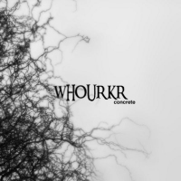
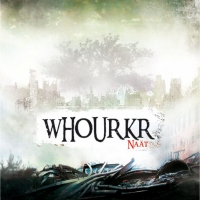

Discography
2008 - Concrete
Après un premier album totalement barré, voici Whourkr qui revient avec Concrete, lui aussi totalement barré malgré un léger changement de style. Cette fois-ci, on a affaire à du "death / electronica / breakcore"... drôle d'appellation n'est-ce pas ?
Mais une fois l'oreille imprégnée de ces morceaux totalement déstructurés (mais à la fois cohérents) on ressent toute l'amplitude de cette dénomination musicale. Comme sur Naät , l'utilisation des mots n'est pas de mise, préférant se baser simplement sur les émotions que la voix dégage, tel un instrument finalement. On y retrouve aussi des changements incessants de tempo, de mélodie, d'émotion etc... mais le tout agrémenté de beaucoup plus de démence. Imaginez deux schizophrènes sous l'influence de LSD et de cocaïne, vous serez encore loin du compte... On ressent aussi cette étrange noirceur agrémentée de violence, formant un tout d'une intensité et d'une attraction surprenante, cette noirceur qui aurait tendance à faire ressortir cette face cachée bestiale, qui comme tout un chacun cherche à se cacher aux yeux des autres et trop souvent aux nôtres. Bref, ne nous égarons pas dans une poésie lugubre, bien que je trouve qu'elle ait totalement sa place sur cette chronique...
Bref, tout ça pour dire que Whourkr nous entraine une nouvelle fois vers des cîmes inexplorées où la folie rencontre l'expérimentation musicale. Un nouveau coup de coeur pour ma part et spécialement pour le morceau Santo où le piano classique clôture ce morceau malsain sur une note de douce mélancolie.
2007 - Naät
Alors là, on arrive dans une dimension encore inexplorée par la main de l'homme (ou plutôt l'oreille). On a affaire à un style ovni, du "death-metal électronica expérimental", l'appellation expérimentale qui d'ailleurs correspond parfaitement bien à cette musique. Mélangeant riffs froids et brutaux, cris gutturaux à la grindcore, et samples en tout genre, on finit par obtenir une musique sur-puissante dont le ressentit m'évoque plus le mal-être que la violence en elle-même. Par exemple "Nrrit" est tout bonnement excellent, avec ses mélanges incessants de tempo, de riffs et surtout un final somptueux avec un sample de musique classique qui donne un peu de douceur (et de répit) à ce concentré de musique froide. La production a été extrêmement soignée, et tout est entièrement cohérent, bien que des oreilles novices pourraient facilement se perdre dans ce tumulte sonore.